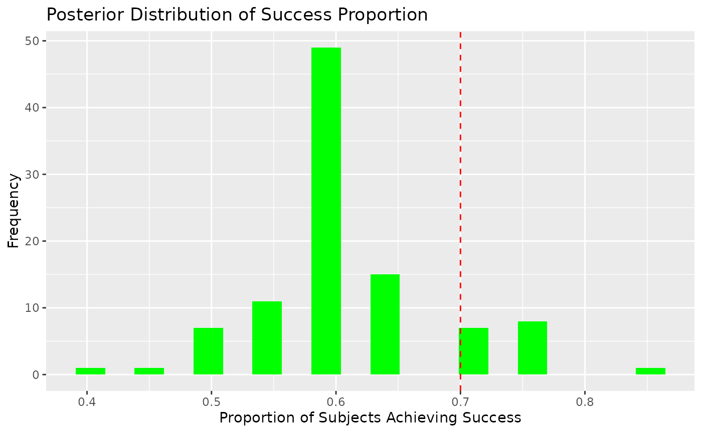

Using Bayesian Neural Networks in Clinical Trials
Swarnendu Chatterjee
2025-01-02
Source:vignettes/ct_app.Rmd
ct_app.RmdIntroduction
Bayesian Neural Networks (BNNs) offer a robust framework for prediction in clinical trials by providing posterior distributions of predictions. This allows for probabilistic reasoning, such as computing the probability that a treatment achieves a certain efficacy threshold or proportion of success.
In this vignette, we: 1. Illustrate data preparation for a clinical trial setting. 2. Fit a BNN to simulate clinical trial outcomes. 3. Leverage posterior distributions for decision-making, such as calculating posterior probabilities of treatment success.
1. Data Preparation
Consider a hypothetical clinical trial comparing the efficacy of a new treatment against a placebo. The response variable is binary, representing treatment success (1) or failure (0).
Simulating Data
set.seed(123)
# Simulate predictor variables (e.g., patient covariates)
n_subjects <- 100
Age <- runif(n_subjects, 18, 50) # Age in years
Dose <- runif(n_subjects, 10, 100) # Dose levels
Severity <- runif(n_subjects, 1, 10) # Baseline severity (arbitrary scale)
# Define true probabilities using a nonlinear function
beta_0 <- 1
beta_1 <- 0.3
beta_2 <- -0.1
beta_3 <- -0.02
beta_4 <- 0.005
logit_p <- beta_0 + beta_1 * Dose + beta_2 * log(Severity) +
beta_3 * Age^2 + beta_4 * (Age * Dose)
p_success <- 1 / (1 + exp(-logit_p)) # Sigmoid transformation
# Simulate binary outcomes
Success <- rbinom(n_subjects, size = 1, prob = p_success)
trial_data <- cbind.data.frame(Success, Age, Dose, Severity)
# Split into training and testing
train_idx <- sample(seq_len(n_subjects), size = 0.8 * n_subjects)
training_data <- trial_data[train_idx, ]
test_data <- trial_data[-train_idx, ]2. Fitting a Bayesian Neural Network
Fit a BNN to the simulated data. We use a binary classification model with a logistic sigmoid activation for the output layer.
# Fit a BNN
model <- bnns(
formula = Success ~ -1 + .,
data = training_data,
L = 2, # Number of hidden layers
nodes = c(16, 8), # Nodes per layer
act_fn = c(2, 2), # Activation functions for hidden layers
out_act_fn = 2, # Output activation: logistic sigmoid
iter = 2e2, # Bayesian sampling iterations
warmup = 1e2, # Warmup iterations
chains = 1 # Number of MCMC chains
)3. Posterior Predictions
Generating Predictions with Uncertainty
The posterior distribution of predictions allows us to compute not just point estimates but also probabilistic metrics.
# Generate posterior predictions for the test set
posterior_preds <- predict(model, subset(test_data, select = -Success))
head(posterior_preds) # Each row corresponds to a subject, and columns are MCMC samples
#> [,1] [,2] [,3] [,4] [,5] [,6] [,7]
#> [1,] 0.9613728 0.9329158 0.9556438 0.9426554 0.9534645 0.9044432 0.9168241
#> [2,] 0.2235967 0.1644491 0.2182378 0.3068896 0.1058935 0.4850575 0.5163130
#> [3,] 0.8056729 0.7204448 0.7399269 0.8347028 0.4957216 0.7750339 0.9228643
#> [4,] 0.9503497 0.9307014 0.9336504 0.8962607 0.9258469 0.8921747 0.9150469
#> [5,] 0.3995912 0.2486405 0.3396684 0.2797588 0.1349837 0.3642235 0.4686999
#> [6,] 0.5136836 0.3549363 0.4026785 0.4110749 0.1543610 0.4230202 0.5971009
#> [,8] [,9] [,10] [,11] [,12] [,13] [,14]
#> [1,] 0.9111997 0.9121889 0.8625658 0.9567358 0.9542246 0.9602404 0.9357228
#> [2,] 0.3942688 0.4497209 0.3828122 0.6100914 0.3841118 0.6776734 0.8269675
#> [3,] 0.9189465 0.8568211 0.8587497 0.9072963 0.9427342 0.8775716 0.8878071
#> [4,] 0.8988923 0.8243679 0.6926867 0.9477703 0.8762663 0.9620489 0.8437045
#> [5,] 0.6172400 0.4568082 0.6192524 0.1567513 0.3564466 0.5361770 0.4396265
#> [6,] 0.7239343 0.6282899 0.7178172 0.3237377 0.3995538 0.6545576 0.5689066
#> [,15] [,16] [,17] [,18] [,19] [,20] [,21]
#> [1,] 0.9062137 0.8199521 0.9797988 0.9247451 0.8758179 0.9106642 0.9279392
#> [2,] 0.4204703 0.3761443 0.3498603 0.5307114 0.3729644 0.4016827 0.4966943
#> [3,] 0.7477193 0.9216222 0.9516617 0.7800093 0.7689832 0.7890541 0.8993579
#> [4,] 0.8732688 0.7904393 0.9490875 0.9284750 0.8721311 0.8871057 0.8851561
#> [5,] 0.2170031 0.4329073 0.5254285 0.2187272 0.2079545 0.2144293 0.3039564
#> [6,] 0.3199969 0.5176712 0.7143767 0.4021149 0.3386800 0.3075837 0.4277087
#> [,22] [,23] [,24] [,25] [,26] [,27] [,28]
#> [1,] 0.9381318 0.9401079 0.9177812 0.9502537 0.8893577 0.9132688 0.9306638
#> [2,] 0.7239841 0.2476447 0.3268315 0.5038306 0.4654164 0.4915736 0.5267577
#> [3,] 0.8866630 0.6951838 0.8274708 0.7791003 0.6198703 0.7538855 0.8055793
#> [4,] 0.9247410 0.9396331 0.9158460 0.9269720 0.8477860 0.9098030 0.7691952
#> [5,] 0.4708130 0.3320307 0.5031485 0.2967139 0.1787833 0.3972591 0.2819297
#> [6,] 0.6304738 0.3819711 0.6011345 0.3874847 0.2662456 0.4966650 0.3946501
#> [,29] [,30] [,31] [,32] [,33] [,34] [,35]
#> [1,] 0.9764351 0.8111083 0.9331689 0.9278026 0.9802747 0.8755287 0.8758250
#> [2,] 0.5271400 0.3400261 0.3769680 0.3956324 0.6121979 0.5617213 0.2089155
#> [3,] 0.9225364 0.9392014 0.7829915 0.6920177 0.8974057 0.7561331 0.6041600
#> [4,] 0.9355604 0.7051606 0.9230535 0.9060591 0.9773210 0.8250347 0.8357104
#> [5,] 0.4465772 0.3130289 0.3673487 0.2285491 0.3752401 0.4501153 0.1125821
#> [6,] 0.4947116 0.4501688 0.4598175 0.2546649 0.4098976 0.4671363 0.1844588
#> [,36] [,37] [,38] [,39] [,40] [,41] [,42]
#> [1,] 0.9404006 0.9840714 0.8828102 0.9428312 0.8524162 0.8184400 0.9453940
#> [2,] 0.4458837 0.3849919 0.5301549 0.6083645 0.6205557 0.2320280 0.2448369
#> [3,] 0.7345420 0.9789656 0.7607266 0.8524568 0.6886955 0.6944182 0.8688881
#> [4,] 0.9378620 0.9611236 0.8659909 0.9409270 0.8480691 0.8211074 0.9204905
#> [5,] 0.2539474 0.5429007 0.4773449 0.3625701 0.3141186 0.2736207 0.2033742
#> [6,] 0.3475937 0.6271542 0.5603578 0.4458035 0.4462321 0.3121366 0.3033622
#> [,43] [,44] [,45] [,46] [,47] [,48] [,49]
#> [1,] 0.9314521 0.8926037 0.9187898 0.9669054 0.9414073 0.8982879 0.8853734
#> [2,] 0.3891865 0.3001002 0.2933510 0.3695236 0.1537747 0.4539966 0.4499136
#> [3,] 0.8428539 0.4215342 0.7616756 0.9482543 0.8841856 0.7722048 0.8569334
#> [4,] 0.9288824 0.8853153 0.9181569 0.9273490 0.8586674 0.9032350 0.8870742
#> [5,] 0.4357125 0.1985050 0.2050060 0.3660159 0.1875264 0.3133900 0.2402087
#> [6,] 0.5310861 0.2510564 0.3051820 0.5395314 0.2703691 0.4108854 0.3354512
#> [,50] [,51] [,52] [,53] [,54] [,55] [,56]
#> [1,] 0.8850330 0.9481938 0.7631612 0.9919739 0.9683620 0.9657593 0.9215794
#> [2,] 0.3060510 0.5348796 0.2743101 0.4085100 0.2210106 0.3131029 0.6377823
#> [3,] 0.5835751 0.9198466 0.8657223 0.9274107 0.9510812 0.9178727 0.8503718
#> [4,] 0.8812970 0.9548685 0.7177186 0.9895322 0.9137324 0.9551138 0.9159162
#> [5,] 0.3237551 0.4597274 0.5527613 0.3725069 0.6053935 0.4144107 0.2121038
#> [6,] 0.3858880 0.5687552 0.6816026 0.5418036 0.8022279 0.4778728 0.3292657
#> [,57] [,58] [,59] [,60] [,61] [,62] [,63]
#> [1,] 0.9215079 0.9661708 0.9287160 0.9045619 0.9479006 0.9089535 0.9351302
#> [2,] 0.2961248 0.2111699 0.4803532 0.6683922 0.4720353 0.5020279 0.2396743
#> [3,] 0.4998061 0.8264248 0.8811049 0.8106474 0.7494190 0.8045081 0.8647755
#> [4,] 0.9100478 0.9461816 0.8951531 0.8896397 0.9472594 0.8929029 0.9101152
#> [5,] 0.2378558 0.3725571 0.3979848 0.3867989 0.4796191 0.2040099 0.5845103
#> [6,] 0.2780328 0.4603849 0.5585999 0.5533180 0.5638147 0.2781013 0.6481464
#> [,64] [,65] [,66] [,67] [,68] [,69] [,70]
#> [1,] 0.9362955 0.9810709 0.9391178 0.9046810 0.9549073 0.9062767 0.8484791
#> [2,] 0.4080229 0.3473553 0.4083197 0.4326079 0.1467606 0.5259679 0.4228981
#> [3,] 0.9423801 0.8537209 0.8669052 0.9233210 0.7958136 0.7725000 0.8445934
#> [4,] 0.9287343 0.9622713 0.9031129 0.8694526 0.9473404 0.8945832 0.8036760
#> [5,] 0.3892443 0.5002476 0.4874131 0.4154533 0.1314282 0.3296129 0.3185250
#> [6,] 0.5990180 0.6087540 0.5214094 0.6181487 0.2507183 0.3677774 0.3964019
#> [,71] [,72] [,73] [,74] [,75] [,76] [,77]
#> [1,] 0.9600188 0.8784986 0.8031698 0.8698130 0.9590640 0.9356778 0.8546193
#> [2,] 0.4771104 0.3633745 0.4852906 0.4100818 0.5147932 0.4720721 0.2328137
#> [3,] 0.8487589 0.4684934 0.7916721 0.7484900 0.9514166 0.5351346 0.5133759
#> [4,] 0.9522802 0.8696047 0.8136503 0.7677945 0.9285820 0.9272583 0.8542228
#> [5,] 0.3935640 0.2954323 0.3111445 0.2410921 0.4219474 0.2339606 0.1817854
#> [6,] 0.5207915 0.3229921 0.3531202 0.3067603 0.5980656 0.3287756 0.3101685
#> [,78] [,79] [,80] [,81] [,82] [,83] [,84]
#> [1,] 0.8335529 0.8521607 0.9394700 0.8722404 0.8522924 0.9677636 0.8942321
#> [2,] 0.4115653 0.4729379 0.6018438 0.2640329 0.2789536 0.3542480 0.5991980
#> [3,] 0.7733507 0.6755266 0.9085519 0.7678251 0.8120000 0.7112474 0.9342559
#> [4,] 0.8183802 0.8506890 0.8483583 0.8773471 0.8475879 0.9621285 0.8525200
#> [5,] 0.3257125 0.3322537 0.4073050 0.2507164 0.3403176 0.4340413 0.4826738
#> [6,] 0.4518530 0.4288814 0.5365180 0.3403906 0.4684776 0.5470473 0.5459098
#> [,85] [,86] [,87] [,88] [,89] [,90] [,91]
#> [1,] 0.8995534 0.8023447 0.8201273 0.9409108 0.8657193 0.9402508 0.9775874
#> [2,] 0.3226545 0.4213005 0.2434076 0.7454907 0.6010352 0.4741427 0.6699810
#> [3,] 0.5719712 0.7613711 0.7760065 0.9077010 0.9179295 0.7328091 0.9779914
#> [4,] 0.8285682 0.7752236 0.7646138 0.9383748 0.7719000 0.9277486 0.9733046
#> [5,] 0.1841121 0.4251285 0.4915524 0.2123416 0.5625906 0.2996497 0.4419641
#> [6,] 0.2261076 0.5789391 0.5530188 0.3170862 0.6148680 0.4777281 0.7042311
#> [,92] [,93] [,94] [,95] [,96] [,97] [,98]
#> [1,] 0.9600465 0.8925409 0.9593908 0.8879047 0.9538929 0.8962047 0.9588745
#> [2,] 0.5688328 0.1968743 0.3527832 0.4832171 0.7573290 0.5397747 0.4212425
#> [3,] 0.7624066 0.6606584 0.5792619 0.8037181 0.9501151 0.7816517 0.8668333
#> [4,] 0.9538866 0.8353541 0.9242324 0.8749433 0.9435723 0.9024435 0.9450509
#> [5,] 0.3328679 0.2459936 0.1511894 0.6797451 0.3450042 0.3184492 0.2439964
#> [6,] 0.3710686 0.3690858 0.3234398 0.7279696 0.5505594 0.5475009 0.4242612
#> [,99] [,100]
#> [1,] 0.9671279 0.9526307
#> [2,] 0.1738080 0.2218101
#> [3,] 0.8845034 0.7718468
#> [4,] 0.9691098 0.7774003
#> [5,] 0.5791478 0.3798798
#> [6,] 0.6863167 0.5275403Each entry in posterior_preds represents the predicted
probability of success from a single posterior sample.
4. Posterior Probability of Treatment Success
Threshold-Based Decision-Making
Suppose we define treatment success as a predicted probability ≥ 0.6. We can compute the posterior probability that this threshold is met for each subject.
Proportion of Subjects Likely to Achieve Success
Next, we calculate the posterior probability that a certain proportion of subjects in the treatment group achieve success.
# Define success proportion threshold
prop_success_threshold <- 0.7
# Simulate posterior proportion of success
posterior_success_proportion <- colMeans(posterior_preds >= success_threshold)
# Posterior probability that ≥ 70% of subjects achieve success
posterior_prob_high_success <- mean(posterior_success_proportion >= prop_success_threshold)
posterior_prob_high_success
#> [1] 0.165. Visualizing Posterior Insights
Posterior Predictive Distribution
library(ggplot2)
# Plot posterior probabilities of success for individual subjects
ggplot(data.frame(Subject = seq_len(nrow(test_data)), Prob = posterior_probs_success), aes(x = Subject, y = Prob)) +
geom_bar(stat = "identity", fill = "blue") +
geom_hline(yintercept = success_threshold, color = "red", linetype = "dashed") +
labs(
title = "Posterior Probability of Treatment Success",
x = "Subject",
y = "Posterior Probability"
)Distribution of Success Proportion
# Histogram of posterior success proportions
ggplot(data.frame(SuccessProp = posterior_success_proportion), aes(x = SuccessProp)) +
geom_histogram(fill = "green", bins = 20) +
geom_vline(xintercept = prop_success_threshold, color = "red", linetype = "dashed") +
labs(
title = "Posterior Distribution of Success Proportion",
x = "Proportion of Subjects Achieving Success",
y = "Frequency"
)
7. Conclusion
The bnns package empowers clinical trial analysts to
leverage Bayesian Neural Networks for predictive modeling and
decision-making. By utilizing posterior distributions, we can: -
Quantify uncertainty in predictions. - Make informed decisions about
treatment efficacy. - Evaluate trial outcomes based on predefined
success criteria.
This probabilistic framework is particularly valuable in scenarios where uncertainty plays a critical role in decision-making, such as early-phase clinical trials.
```